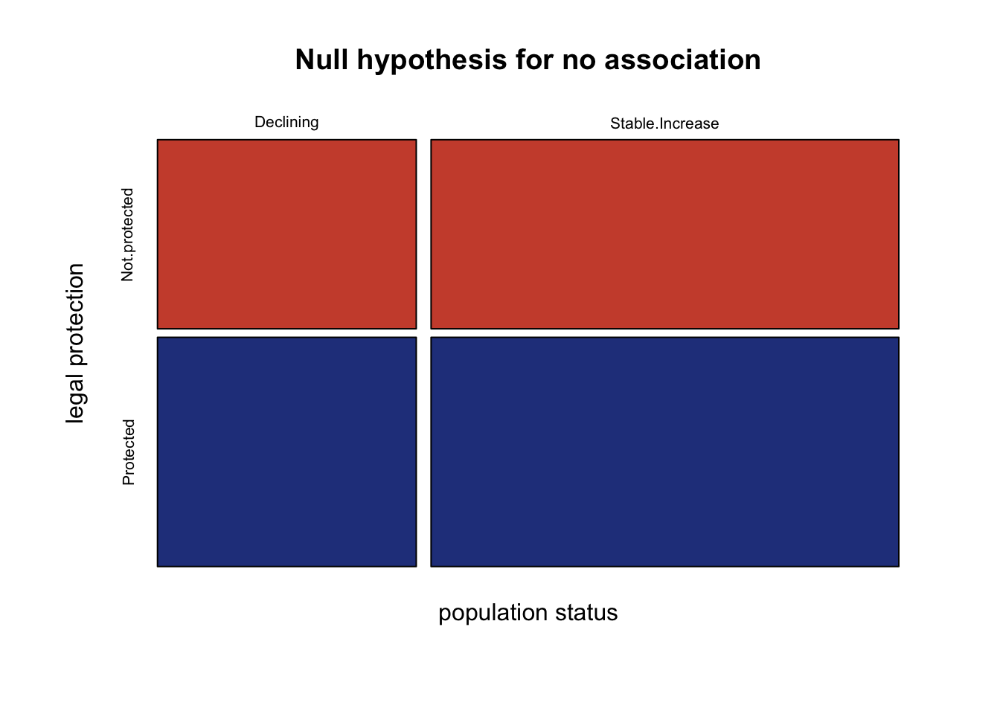

Chapter 5 Introduction to hypothesis testing
by Heather Kropp for ENVST 206: Introduction to Environmental Data Hamilton College
5.1 Learning objectives
- Learn about data describing biodiversity and species impacts on ecosystems
- Learn how to conduct statistical hypothesis testing for t-tests and chi squared tests
- Interpret statistical output in R
5.2 New functions & syntax
stat.summary, shapiro.test, bartlett.test,tapply,t.test, chisq.test, mosaicplot
5.3 Introduction to two sample t-tests
5.3.1 The data
The consumption of vegetation by herbivores can impact carbon cycling through by when plant biomass is consumed. These impacts can even change the energy, water, and nutrient cycling in an area.
Brown lemmings are a type of rodent that lives in the Arctic in Alaska and eastern Siberia.
Lemming populations fluctuate over time. When lemming populations reach high numbers in an ecosystem, they can consume up to 90% of the plant biomass in an area. Herbivory can also change the types of plant species, allocation of root and leaf biomass, and impact nutrient cycling. However, lemming populations in the Arctic have been decline over the previous decades and some regions have seen lemmings disappear. A study done by Lara et al. in 2017 focused on better understanding the impact of lemming herbivory on the soil conditions and the carbon cycle in Arctic ecosystems. This research can help indicate the potential impacts that declines in lemming herbivory might have on changing Arctic ecosystems.
Lara et al. looked at the impact of lemmings by using a long term fenced exclosure that kept lemmings out (pictured example below) for more than 50 years. The authors found that there were sufficient lemming population outbreaks in frequent intervals to properly capture long-term lemming impacts on the ecosystem.
Example of a grazing exclosure by Hugh Venables, CC BY-SA 2.0, via Wikimedia Commons
They measured many components of the carbon cycle including the flux of carbon dioxide that was released from the soil versus taken in by plants. This is called net ecosystem exchange (NEE in g CO2 m–2 day–1) and it was measured in plots with exclosures (exclusion, lemmings cannot enter the plot, no herbivory) and without exclosures (control, lemmings can freely graze in the plot). Methane is another greenhouse gas that can be released by bacteria in Arctic soils typically when soils are flooded or hold a high volume of water. The vegetation at the soil surface can influence the release of methane from soils. Some plants allow methane to readily escape the soil. Plant water use and leaf also influences the amount of water in the soil. Methane emissions from Arctic soils are a major research focus of Arctic climate change research since changes in methane production in Arctic soils may amplify climate change. Other measurements also included factors that influence the carbon cycle such as soil temperature (SoilTemp_1, ° C). Higher soil temperature can lead to greater microbial activity leading to greater greenhouse gas emissions. The tutorial will focus on analyzing the impacts of lemming grazing of vegetation on methane fluxes. Here’s a look at the data:
#file path on Rstudio cloud
lemmings <- read.csv("/cloud/project/activity04/lemming_JEco_HerbEx.csv") PLOT herbivory_trt CH4_Flux NEE SoilTemp_1
1 21C Ctl -5.708030 -0.072987056 10.6
2 22C Ctl 3.301541 0.475255463 15.6
3 23C Ctl -1.004405 0.485916744 10.0
4 24C Ctl 16.490522 -0.028536595 12.2
5 15C Ctl 17.189540 2.391257958 6.1
6 11C Ctl 15.736118 0.008257762 7.8The CH4 fluxes column contains the methane data (CH4_Flux mgC m–2 day–1), The herbivory_trt labels the type of treatment. A value of Ctl indicates that the data is from a control plot with no exclosure (open to lemming grazing). The Ex rows will indicate that an exclosure was applied preventing lemmings from accessing the site. The net ecosystem exchange column represents the amount of CO2 produced in the plot (NEE, mgC m–2 day–1). A negative value means that the plants are taking in more CO2 through photosynthesis than what gets released through respiration by plants and decomposition. It will be helpful to treat the herbivory column as a factor:
ggplot2 will be used plotting in this tutorial. To follow along, install the package and load it to the environment:
A boxplot will help visualize the differences in methane fluxes between treatments. Here positive values indicate that methane is being emitted from the plot and a negative value indicates that there is methane uptake occurring over the plot surface. Let’s also use the stat_summary function in ggplot2 to add the mean to the plot too. This will really help with getting a sense for the range of data:
ggplot(lemmings, aes(x=herbivory_trt, y=CH4_Flux))+ # data
geom_boxplot()+ # box plot geometry
stat_summary(geom="point", # add points
fun = "mean", # for the mean
col="tomato3", # color (will be red points)
size=4)+ # size of point
labs(x="Herbivory treatment",
y="Methane flux (mgC m –2 day–1)")+ # change the axis labels
theme_classic() # plot with no gridlinesThe boxplot shows breaks the data up into quartiles (the values where we observe 0, 25, 50, 75,and 100% of the data). Here the thick black lines show the median of the data. This is the value where 50% of the data observations are above the value and below the value. The grey shaded box shows the range between 25-75%. The whiskers or lines show the rest of the range of data. Note that this function automatically separates potential outliers and shows them as open points. However, this is based on a calculation and these observations may be legitimate observations to include in our analysis. In this case, the observation is well within an observable and reasonable range, it just does not occur frequently in the exclusion plots. We have no reason to believe this data should be thrown out and will keep it in our analysis.
Looking at the means for each group can also help contextualize the typical methane fluxes in each plot. The tapply function is similar to aggregate, and allows you to apply a function to an index. It returns a vector of output with each element labeled with the index value.
meansCH4 <- tapply(lemmings$CH4_Flux,#data
lemmings$herbivory_trt,#index for each calculation
"mean") #function to use
meansCH4 Ctl Ex
18.814645 5.714765 At first glance, the means seem to be different. The exclusion plot mean of 5.7 g C m–2 day–1 seems lower than the control plot mean of 18.8 g C m–2 day–1, but we need to account for the uncertainty around the mean. The t-test can help support our conclusions.
5.3.2 Study goals and statistical hypotheses
With the help of statistical analysis, we can examine whether there is a difference in methane fluxes between the control plot (allows grazing) and the exclusion plots (prevents grazing). The study can be guided by the overall question: Does lemming grazing impact methane fluxes? This question is open ended and could be answered with grazing increasing, decreasing, or having no influence on methane fluxes.
The boxplot and means in the graph above suggested there may be some differences in the data, but there is also a fair amount of overlap in the spread of the data. Statistical hypothesis testing leads to more robust conclusions about differences between treatments than simply looking at a graph. A two-sample t-test can be used to make this comparison. The test is structured to examine whether two population means differ. We can use this test to examine whether the control has a different mean methane flux than the exclosure treatment.
In statistical hypothesis testing, there are often two hypothesis that the test examines called the null hypothesis and the alternative hypothesis. The statistical test examines whether the null hypothesis should be accepted or rejected (subsequently accepting the alternative hypothesis). Statistical hypotheses are separate from the scientific hypotheses and are structured around the specific assumptions and framework of the test. Here our hypothesis for the t-test would be
H0: The means do not differ between the two groups.
HA: There is a difference between the means of the two groups.
5.3.3 Checking assumptions of test
The two sample t-test makes the following assumptions:
1. Independently and randomly sampled continuous data
2. Each group is normally distributed
3. Variances of the two group are equal
Variance is another measure of the spread of data. It is part of the standard deviation calculation: the sum of the squared difference between each observation from the mean.
5.3.3.1 Assumption of independence and random sampling
Random, independent sampling is achieved through proper experimental design. Given the published experimental design of the study by Lara et al., and the assumptions the authors state in their study, we can conclude this assumption is sufficiently met.
5.3.3.2 Assumption of Normality
It can be difficult to assess normality visually especially for small sample size. Some data may be assumed to be normal based on underlying knowledge about the data. If you are unsure, the Shapiro-Wilk test can be used to test normality more quantitatively (for sample size < 2,000). In R, the function for the Shapiro Wilk test is shapiro.test and the only argument is the vector of data that you want to test. Since each treatment group must be tested directly, we will subset the treatments directly in the function using the [] notation with the relational statement:
#use the shapiro wilks test to look for normality in each treatment
#shapiro-wilk test on grazing plots
shapiro.test(lemmings$CH4_Flux[lemmings$herbivory_trt == "Ctl"])
Shapiro-Wilk normality test
data: lemmings$CH4_Flux[lemmings$herbivory_trt == "Ctl"]
W = 0.87763, p-value = 0.08173The shapiro-wilk test is set up as a statistical test. This means that you are testing the null hypothesis:
H0: the data are normally distributed.
HA: the data are not normally distributed.
You’ll use the conventional confidence level (\(\alpha\) = 0.05) for our statistics in this class. In this test, we’ll rely on the p-value associated with the test statistic to assess how this outcome compares to our confidence level. A p-value of less than 0.05 would indicate that we should reject our null hypothesis since it would be unlikely to observe this test statistic value if the data were normally distributed. If the p-value is greater than 0.05, then we can assume that our data is normally distributed. You can see that the control plots do not deviate from a normal distribution. Next let’s test the exclusion plots:
#shapiro-wilk test on grazing exclusion plots
shapiro.test(lemmings$CH4_Flux[lemmings$herbivory_trt == "Ex"])
Shapiro-Wilk normality test
data: lemmings$CH4_Flux[lemmings$herbivory_trt == "Ex"]
W = 0.93325, p-value = 0.41585.3.3.3 Assumption of equal variance
You can also test for differences in the variance between groups. The t-test can still be run if the variances are not equal, but will need a slightly different equation. In R, you use the bartlett.test function to run the test statistic. This test statistic has the following hypotheses:
H0: Groups have similar variances
HA: Groups do not have similar variances
Here accepting the null would confirm the assumption that the variances do not differ between groups. A p-value of less than 0.05 would indicate we would be unlikely to observe the difference in variances under the null hypothesis.
#use bartlett test since testing for equal variance
bartlett.test(lemmings$CH4_Flux ~ lemmings$herbivory_trt)
Bartlett test of homogeneity of variances
data: lemmings$CH4_Flux by lemmings$herbivory_trt
Bartlett's K-squared = 0.21236, df = 1, p-value = 0.6449Here, the test statistic is well above 0.05 so you can assume the variances are equal and accept the null hypothesis.
5.3.4 Two sample t-test in R
You can now conduct a two sample t-test now that you know the data meets all of the assumptions needed to reliably interpret the test. Now that all assumptions have been tested, we can revist the original statistical hypotheses:
H0: The mean methane flux does not differ between the control and exclosure plots.
HA: The mean methane flux does differ between the control and exclosure plots.
The t-test statistic is calculated based on the difference between means. Here a two sample t-test (with equal variance) is calculated based on the difference between means, the sample size, and the pooled standard deviation. No difference between means would be interpreted as the mean for group 1 is equal to the mean for group 2.

In R, the t.test function performs a t-test. Keep in mind this is a two sample t-test. Our data is formatted so that the identifier of the treatments is in the herbivory_trt column and the data for both groups is in the CH4_Flux column. The easiest way to tell R how to use this data is using a formula expression. Typically formulas follow this expression: Dependent variable ~ Independent variables. That symbol is called a tilde and the key for it is usually just above your tab key and next to the 1 key on your keyboard. Whenever, you see an expression you can think of it as dependent variable is a function of the independent variables. This is a common way to express statistical relationships and we will build on it with more complex relationships. Here we’ll use this formula notation to indicate that the t-test for CH4_Flux data should be a function of the groups indicated by the herbivory_trt column.
Two Sample t-test
data: lemmings$CH4_Flux by lemmings$herbivory_trt
t = 1.5328, df = 22, p-value = 0.1396
alternative hypothesis: true difference in means between group Ctl and group Ex is not equal to 0
95 percent confidence interval:
-4.624054 30.823815
sample estimates:
mean in group Ctl mean in group Ex
18.814645 5.714765 There are many types of t-tests that can be run in R with slightly different assumptions. The var.equal argument specifies that this is a t-test with equal variance between groups.
There are other types of t-test that can be run with this argument. Changing the argument to var.equal=FALSE would run a two-sample t-test with unequal variance (see lecture notes for equation).
You can see that the p value for the t-test statistic is well above the confidence level of 0.05. The 95% confidence interval also overlaps with zero. This indicates that we cannot reject the null hypothesis. The difference between means is not statistically significant. Lemming grazing did not significantly alter methane fluxes. Keep in mind that either outcome of accepting or rejecting the null hypothesis is still of interest scientifically. Knowing that lemming grazing did not impact methane release still conveys information about greenhouse gases in Arctic ecosystems. Do not fall into the trap of thinking that accepting the null hypothesis is uninteresting or not relevant. It is still information!
5.4 One sample t-test in R
The one sample t-test compares the mean of a vector of data to a mean specified by the null hypothesis. Let’s explore running a one sample t-test. Let’s test to see if the control plot methane levels are statistically different from zero (no methane produced).
H0: The mean of the data variable does not differ from zero
HA: The mean of the data variable is different from zero

The one sample t-test still requires normally distributed data. We checked this group before using the shapiro test, but here is a reminder:
#shapiro-wilk test on grazing exclusion plots
shapiro.test(lemmings$CH4_Flux[lemmings$herbivory_trt == "Ctl"])
Shapiro-Wilk normality test
data: lemmings$CH4_Flux[lemmings$herbivory_trt == "Ctl"]
W = 0.87763, p-value = 0.08173Now you can run the one sample t-test. The mu argument provides the mean value used in the null hypothesis (set to zero in our case):
# one sided t test with the null mean set to zero
t.test(lemmings$CH4_Flux[lemmings$herbivory_trt == "Ctl"], mu=0)
One Sample t-test
data: lemmings$CH4_Flux[lemmings$herbivory_trt == "Ctl"]
t = 2.9142, df = 11, p-value = 0.01408
alternative hypothesis: true mean is not equal to 0
95 percent confidence interval:
4.60478 33.02451
sample estimates:
mean of x
18.81465 The t-test shows the range in the 95% confidence interval does not overlap with zero (with the lower interval at least 4 mg C per day above zero) and the p value is below the confidence level. This is a strong indicator that the methane produced in the control plot does significantly differ from zero. This indicates that under typical tundra conditions with lemming grazing, methane production is not negligible with a mean well above zero. This helps add context that tundra ecosystems can be a source of methane under typical conditions that allow for natural herbivory and grazing by small rodents and lemmings.
5.5 Introduction to chi-squared test
5.5.1 The data
The next test is useful if you want to collect categorical data (also known as nominal data). Categorical data fits into distinct predefined categories. For example, if you counted the number of blue and red cars driving down College Hill Road in an hour, you have data in two distinct categories: # of red cars and # of blue cars.
Farnsworth (2004) looked at the influence of legal protections on populations of rare plant species. Here we have two variables each with two outcomes. The first describes legal protection with outcomes being protected or not protected. The second is the status of population: stable/increasing or decreasing. Here a decreasing observation for a species would indicate that the number of plants in that species is declining over time. The data needs to be set up in a contigency table. Rows and columns are assigned the outcomes for the two different variables and each cell of the table shows the number of observations in those categories. Each observation describes the number of species:
#set up contigency table
species <- matrix(c(18,8,15,32), ncol=2, byrow = TRUE)
colnames(species) <- c("Not.protected", "Protected")
rownames(species) <- c("Declining", "Stable.Increase")You can use a mosaic plot to visualize the proportion of the total observations in each category. You will see the size of the boxes is weighted by the proportion of species within each category. A larger box indicates that there are more observations in a category.
#make a mosaic plot with an informative title and axes labels
mosaicplot(species,
col=c("tomato3", "royalblue4"), # add color to rows
xlab="population status", # x label
ylab="legal protection", # y label
main="Legal protection impacts on populations") # titleIf legal protections don’t have any impact on populations, we would expect the species to be randomly distributed in each population status category and legal protection category.
5.5.2 Chi squared test
Visually it looks like there may be some difference in population status that depends on legal protections. However, it is difficult to know whether this difference is significant. You can test whether the frequency of observations in each category meets the expectation under a null hypothesis. Here the statistical hypotheses are:
H0: Observations in each category occur at expected frequencies
HA: Observations in each category differ from expected frequencies
The test statistic is calculated by comparing the observations to expectations:This statistic uses a \(\chi\)2 distribution to evaluate how likely we are to observe deviations from the expected value under the null hypothesis. Higher deviations from expected values result in a greater \(\chi\)2 statistic.

The \(\chi\)2 goodness of fit test in R uses the chisq.test function. By default the test will assume a null hypothesis with equal proportions of occurrences for each cell of the contingency table. You can alter this if your null hypothesis should have different expected frequencies. By default, R would enter expected frequencies based on diving the total number of items in our data frame evenly. Here, with four different combinations, the null frequencies would be each population x protection outcome occurring at a rate of 25%. However, this deviates a little from statistical recommendations.
It is recommended that you calculate expected frequencies that would occur when there is no association between the categories using the row and column totals. This can help account for differences in the number of samples collected in each category. For example, summing up the protected species, there are 40 species observed. The unprotected species only has 33 total observations. There are also less species experiencing declines in the population compared to those experiencing stable/increasing population. The chi-squared statistic might pick up differences in these sample size by each category rather than the association between legal protection and population status.
Expected frequencies can be calculated by multiplying row and column sums and dividing by the total number of observations. You can also enter expected proportions using the p argument if you have a hypothesis about the null proportions under a scientific premise. In this case, we only are looking for whether legal protection is associated with population status. This means we will calculate expected values under the null:
#total number of species counted
tot <- sum(species)
# sum up rows of population status
tot.decline <- sum(species[1, ])
tot.increase <- sum(species[2, ])
# sum up columns for protection
tot.noProtect <- sum(species[,1])
tot.protect <- sum(species[, 2])
#calculate expected values:
expectedFreq <- matrix(c(tot.decline*tot.noProtect, # each cell multiplies sums
tot.decline*tot.protect,
tot.increase*tot.noProtect,
tot.increase*tot.protect),
byrow=TRUE, ncol=2)/tot # divide by total numer
colnames(expectedFreq ) <- c("Not.protected", "Protected")
rownames(expectedFreq ) <- c("Declining", "Stable.Increase")Let’s look at the mosaic plot to see the expected outcomes for the null hypothesis: there is no association between legal protection and population status:
mosaicplot(expectedFreq,
col=c("tomato3", "royalblue4"),
xlab="population status",
ylab="legal protection",
main="Null hypothesis for no association")
Next run the chi squared test indicating the actual and expected frequencies:
#Conduct a chi-squared test
chisq.test(x=species, # actual data
y=expectedFreq) # expected values under null
Pearson's Chi-squared test with Yates' continuity correction
data: species
X-squared = 7.9642, df = 1, p-value = 0.004771Here the chi-squared test statistic has a p value well under 0.05. The null hypothesis can be rejected. Note there is a correction applied to 2x2 contigency tables (Yates’ continuity correction) since the degrees of freedom is small. The null hypothesis assumed that each category combination would occur with equal frequencies. We can conclude that legal protection status is associated with a higher number of species that have stable/increasing populations than what would be expected by random chance. Species in areas that are not legally protected status have a higher number of species with declining populations than expected by random chance alone.
5.6 Citations
Lemming grazing & surface fluxes
Lara, M., D. Johnson, C. Andresen, R. Hollister, and C. Tweedie. (2017). Peak season carbon exchanges shifts from a sink to a source following 50+ years of herbivore exclusion in an Arctic tundra ecosystem. Journal of Ecology 105:122-131.
Data citation:
Lemming grazing & surface fluxes Mark Lara. 2016. Long-term functional impact of Herbivore Exclusion. Arctic Data Center. doi:10.18739/A2CC0TT3H.
Species protections
Farnsworth, E.J. (2004). Patterns of plant invasions at sites with rare plant species throughout New England. Rhodora: 97-117.